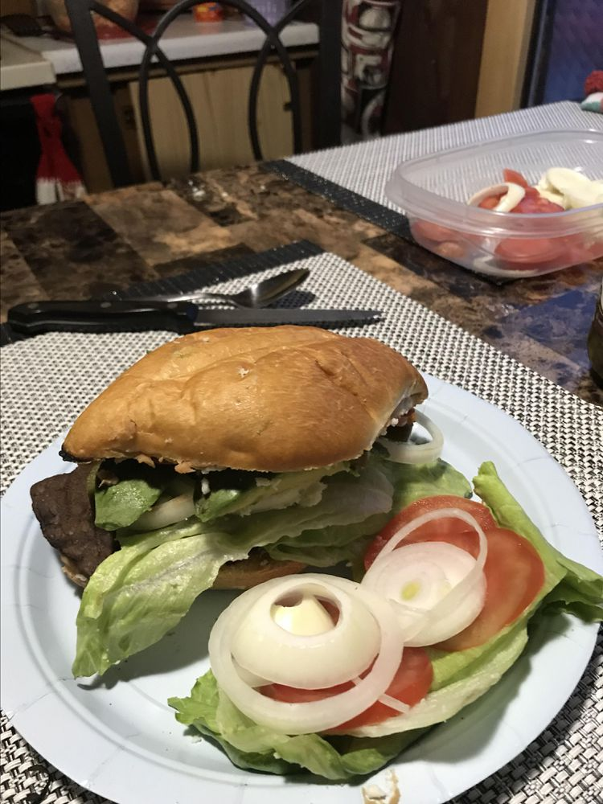

Tortas

Description
Delicious Mexican tortas, or sandwiches, that are so easy to make — and eat!
Recipes
- 4 (3 ounce) thin-cut beef round steaks
- 4 Mexican-style sandwich rolls (bolillos)
- ¼ cup sour cream, divided
- 1 (15 ounce) can pinto beans - drained, rinsed, and mashed - divided
- 2 avocados - peeled, pitted and sliced
- 2 large tomatoes, sliced
- 2 pickled jalapeno peppers, sliced into quarters lengthwise
- 2 cups shredded romaine lettuce, divided
- 1 cup chopped fresh cilantro, divided
- 1 cup crumbled queso fresco (Mexican fresh cheese), divided
- 1 lime, quartered
Steps
- Heat a large skillet over medium heat.
Pan-fry steaks to desired doneness,
about 5 minutes on each side.
- Slice rolls lengthwise.
Spread about 1 tablespoon sour cream onto one side of each roll
and top with about 1/3 cup mashed pinto beans per sandwich.
Place 1 cooked round steak per sandwich on top of pinto beans.
- Layer each sandwich with a portion of avocado slices,
tomato slices, and sliced pickled jalapeños,
about 1/2 cup shredded lettuce, 1/4 cup cilantro,
and 1/4 cup crumbled queso fresco cheese.
- Squeeze a lime wedge over each sandwich, close, and serve.
Back to Top
Back to Main Menu